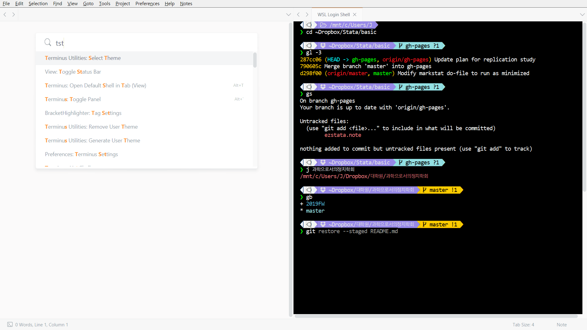
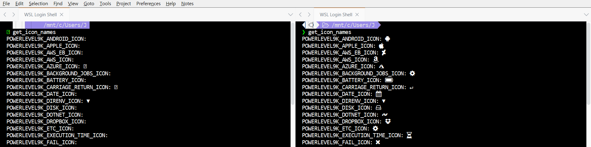
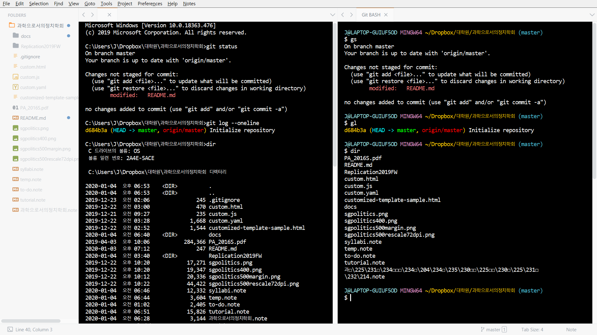

Git, GitHub와 Sublime Text 튜토리얼 Advanced
Terminus로 Git 작업을 빈번하게 수행한다면, git log --oneline과 같은 명령어를 일일이 입력하는 것은 지루합니다. 자주 사용하는 명령어들을 별칭(alias)으로, 로그를 보기 위해서는 그저 gl만 입력해도 충분하다면, 생산성은 훨씬 높아질 것입니다. 또한 로컬 저장소에서 여러 브랜치를 넘나들며 작업하거나 여러 로컬 저장소를 관리해야 한다면, 현재 내가 작업하고 있는 저장소와 브랜치를 시각적으로 두드러지게 하는 편이 실수를 줄일 수 있을 것입니다. 한 번 입력했던 명령어가 자동완성이 된다면 어떨까요? git status를 입력하지 않고도 현재 위치한 저장소의 파일/폴더 상태를 알 수 있다면요? 커맨드 라인 인터페이스(CLI)가 흑백으로 가득한 단조로운 화면과 불편하기 짝이 없는 사용법을 의미한다는 편견은 더 이상 성립하지 않습니다–21세기인걸요. 
Concept
- CLI는 우리가 Stata의 명령 창에서 하듯이, 마우스 대신 키보드로 명령어를 실행하는 방식을 말합니다.
- 쉘이란 사용자가 OS에 직접 명령어를 전달할 수 있는 프로그램입니다. 쉘은 쉘 안에서 다른 프로그램(이를테면 Git, Stata, R)을 실행할 수 있습니다.
- Windows의 cmd, macOS 및 Linux의 BASH, Zsh 등은 CLI 쉘입니다.
- 터미널 에뮬레이터는 쉘을 실행하는 프로그램입니다. 터미널 에뮬레이터 구동시 실행되는 쉘을 로그인 쉘이라고 부르는데, 기본값이 마음에 들지 않으면 다른 쉘로 바꿀 수도 있습니다. 터미널 에뮬레이터는 대개 자체적인 배색이나 폰트 설정을 제공합니다.
- 서브라임 텍스트의 Terminus, macOS의 Terminal이 터미널 에뮬레이터입니다.
- 터미널 에뮬레이터인 Terminus를 통해 우리는 cmd, BASH, Zsh 등의 쉘을 실행하고, 터미널 에뮬레이터로 실행된 쉘 안에서 Git을 실행합니다.
- 따라서 Git 실행시의 명령어를 간소화하고 싶다면 Git을 실행하는 쉘에서 설정해야 합니다.
- 그리고 쉘의 배색이나 폰트가 마음에 들지 않는다면 쉘을 실행하는 Terminus에서 설정해야 합니다.
Terminus
배색
- Terminus는 200여개의 번들 배색을 제공합니다. ctrl/command+shift+p를 눌러
Terminus Utilities: Select Theme를 선택해서 마음에 드는 배색을 찾아보세요. - macOS 사용자의 경우, Terminus 설정을 수정해야 배색이 정상적으로 출력됩니다.
- command+shift+p를 눌러
Preferences: Terminus Settings를 선택하면, 배색 및 폰트 설정 파일을 수정할 수 있는 창이 열릴 것입니다. - 다음의 코드를 복사하여 새로 열린 창의 오른쪽 탭에 붙여넣고 저장합니다:
[View code]
{ /* the outermost curly brackets will be already in your settings file */ // 256색 활성화 "256color": true, "unix_term": "xterm-256color", } /* the outermost curly brackets will be already in your settings file */
- command+shift+p를 눌러
- macOS 사용자의 경우, Terminus 설정을 수정해야 배색이 정상적으로 출력됩니다.
- Terminus의 번들 배색이 불만족스럽다면, 직접 색상을 조정하는 것도 가능합니다. ctrl/command+shift+p를 눌러
Preferences: Terminus Settings를 선택하면, 배색 및 폰트 설정 파일을 수정할 수 있는 창이 열릴 것입니다. 다음의 코드를 참조하여 오른쪽 탭의 내용을 적절히 수정하세요:[View code]
{ /* the outermost curly brackets will be already in your settings file */ // 커스텀 테마 활성화 "theme": "user", // 배색 지정(따옴표 안의 헥스코드(예컨대 #000000)를 원하는 색상의 헥스코드로 변경하세요) "user_theme_colors": { "00": "#000000", // 프롬프트 글자색; 배경색과 동일하게 지정 "01": "#f07171", // git status "02": "#93e0e3", // 프롬프트 브랜치명 배경색(clean); git branch 현재 브랜치명; ls 폴더명; 프롬프트 커서 "03": "#ffcc00", // 프롬프트 브랜치명 배경색(dirty) "04": "#9789e8", // 프롬프트 경로 배경색 "05": "#dc8cc3", "06": "#44b4cc", "07": "#f5f5f5", "08": "#939293", // 자동 완성; R 수식 "09": "#ff0000", // git log 리모트 브랜치명 "10": "#00ff00", // git log 로컬 브랜치명 "11": "#ffff00", // git log 태그명 "12": "#506070", // Alias tip "13": "#ff00ff", "14": "#00ffff", // git log HEAD "15": "#e5e5e5", "background": "#000000", "foreground": "#ffffff" }, } /* the outermost curly brackets will be already in your settings file */
폰트
- 인기 있는 쉘 테마들은 다양한 아이콘을 활용하여 프롬프트를 장식하는데, 사용 중인 폰트가 해당 아이콘을 지원하지 않을 경우 깨진 문자가 표시됩니다. 이러한 문제를 해결하기 위해서는 아이콘을 지원하는 폰트를 설치하고, 서브라임 텍스트 전체가 아니라 Terminus에만 해당 폰트가 적용되게끔 설정을 수정해야 합니다. 
폰트 설치하기
- 우선 다음의 링크에서 마음에 드는 폰트를 다운로드하여 설치합니다: https://www.nerdfonts.com/font-downloads
- Windows 사용자는 압축 해제 후 파일명에
Mono는 붙어 있지 않고,Windows Compatible만 붙어 있는 것을 설치합니다. - macOS 사용자는 압축 해제 후 파일명에
Mono,Windows Compatible이 모두 붙어 있지 않은 것을 설치합니다.
- Windows 사용자는 압축 해제 후 파일명에
폰트 적용하기
- 이제 ctrl/command+shift+p를 눌러
Preferences: Terminus Settings를 선택하고, 배색 및 폰트 설정 파일을 수정할 수 있는 창이 열리면, 다음의 코드를 참조하여 오른쪽 탭의 내용을 적절히 수정하세요:[View code]
{ /* the outermost curly brackets will be already in your settings file */ "view_settings": { // 폰트 지정 "font_face": "Consolas Nerd Font Complete Windows Compatible", // 프롬프트 구분자(prompt segment separtor)의 적절한 출력을 위한 설정 "caret_extra_top": 0, "caret_extra_bottom": 0, "line_padding_bottom": 0, "line_padding_top": 0, }, } /* the outermost curly brackets will be already in your settings file */
- Windows 사용자의 경우
font_face설정을 수정해도 폰트가 변경되지 않는다면, 아마도 폰트명을 잘못 입력했을 수 있습니다. 서브라임 텍스트가 인식하는 폰트명은 다음의 링크에 폰트를 업로드하여 확인할 수 있습니다: https://opentype.js.org/font-inspector.htmlNaming Table을 눌러compatibleFullName,fullName,postScriptName항목을 폰트명으로 시도해보세요.
쉘
for Windows

- 스크린샷에서 왼쪽은 Windows의 기본 쉘인 cmd로 Git을 실행한 것이고, 오른쪽은 Git for Windows가 제공하는 BASH 쉘의 에뮬레이터 Git BASH로 Git을 실행한 것입니다.
- cmd는 현재 위치한 디렉토리의 전체 경로를 어떤 색도 입히지 않고 출력하는 반면, Git BASH는 현재 위치한 디렉토리의 경로에 색을 입히고, Git 저장소일 경우 현재 브랜치명도 함께 표시합니다.
- cmd에서도 별칭 설정이 불가능하지는 않지만, 과정이 Git BASH보다 번거롭습니다.
- 약어 설정과 현재 브랜치 표시에 충분히 만족한다면, Windows 사용자에게 Git BASH는 가장 쉬운 해법입니다: Git을 설치하면서 이미 설치했으니까요.
Git BASH를 로그인 쉘로 설정하기
- ctrl/command+shift+p를 눌러
Preferences: Terminus Settings를 선택하면, 로그인 쉘 설정 파일을 수정할 수 있는 창이 열릴 것입니다. 다음의 코드를 참조하여 오른쪽 탭의 내용을 적절히 수정하세요:[View code]
{ /* the outermost curly brackets will be already in your settings file */ "default_config": { "linux": null, // login shell "osx": null, // login shell "windows": "Git BASH", }, "shell_configs": [ { "name": "Git BASH", "cmd": "C:\\Program Files\\Git\\bin\\sh.exe", "env": {}, "enable": true, "platforms": ["windows"], }, ], } /* the outermost curly brackets will be already in your settings file */
- 이제 Terminus를 실행하면(alt/option+r) Git BASH가 실행됩니다.
Git BASH에서 Git 명령어 별칭 설정하기
- 자주 사용하는 Git 명령어들의 별칭을 만들기 위해, Git BASH의 설정 파일을 편집할 것입니다. 다음의 코드를 Terminus에 입력하세요:
cd ~ alias subl="/c/Program\ Files/Sublime\ Text\ 3/subl.exe" subl .bashrc
- 서브라임 텍스트에
.bashrc파일을 편집할 수 있는 탭이 열리면, 다음의 코드를 추가하세요:[View code]
# general alias subl="/c/Program\ Files/Sublime\ Text\ 3/subl.exe" # git commands alias ga="git add" alias gap="git add -p" alias gca="git commit --amend" alias gcm="git commit -m" alias gco="git checkout" alias gcl="git config --list" alias gb="git branch" alias gs="git status" alias gl="git --no-pager log --oneline"
- alt/option+w, alt/option+r을 눌러 Terminus를 종료하고 다시 시작하세요.
- 이제 Git 저장소에서
gs만 입력하면git status명령어가 실행됩니다. 만약 Git 명령어들의 별칭을 수정하거나 추가하고 싶다면, 다음의 코드를 Terminus에 입력하여.bashrc파일을 편집하세요:cd ~ subl .bashrc
for macOS & WSL Ubuntu

- 스크린샷에서 왼쪽은 macOS Mojave까지의 로그인 쉘인 BASH로 Git을 실행한 것이고, 오른쪽은 macOS Catalina부터의 로그인 쉘인 Zsh로 Git을 실행한 것입니다.
- Zsh은 다양한 테마와 플러그인들, 그리고 이를 관리하는 프레임워크들이 잘 발전되어 있어, 쉘 입문자라도 원하는 대로 꾸미기가 어렵지 않은 쉘입니다.
- Zsh은 macOS와 몇몇 Linux 배포판에는 기본으로 탑재되어 있고, Ubuntu처럼 Zsh이 기본 탑재되어 있지 않은 Linux 배포판에서도 명령어 한 줄(
sudo apt-get install zsh)로 다운로드가 가능합니다.- Windows 10 사용자는 Windows Subsystem for Linux를 통해 Linux 배포판을 설치하면 Linux 사용자와 동일한 경험을 할 수 있습니다. 이하에서는 macOS와 WSL Ubuntu 사용을 전제하고 설명할 것입니다.
Zsh을 로그인 쉘로 설정하기
- macOS Mojave 이하 또는 WSL Ubuntu를 사용한다면, 로그인 쉘을 BASH에서 Zsh로 변경해야 합니다. 다음의 코드를 Terminus에 입력한 후, Terminus(또는 OS)를 재시작하세요:
chsh -s `which zsh`
- Terminus에 다음의 코드를 입력했을 때
bin/zsh또는usr/bin/zsh이 출력된다면 로그인 쉘이 Zsh로 설정된 것입니다:echo $SHELL
Zsh에서 Git 명령어 별칭 설정하기
- 다음의 코드를 OS에 맞게 수정하여 Terminus에 입력합니다.
# WSL Ubuntu # alias subl='/mnt/c/Program\ Files/Sublime\ Text\ 3/subl.exe' cd ~ subl .zshrc
- 서브라임 텍스트에
.zshrc파일을 편집할 수 있는 탭이 열리면 다음의 코드를 OS에 맞게 수정하여 추가합니다:[View code]
################## # VAL SET ################## # WSL Ubuntu # alias subl='/mnt/c/Program\ Files/Sublime\ Text\ 3/subl.exe' # export PATH=$HOME/bin:/usr/local/bin:$PATH export HISTFILE=~/.zsh_history export HISTSIZE=10000 export SAVEHIST=10000 ################## # PERSONAL ################## # aliases alias help=run-help alias ga="git add" alias gap="git add -p" alias gca="git commit --amend" alias gcm="git commit -m" alias gco="git checkout" alias gcl="git config --list" alias gb="git branch" alias gs="git status" alias gl="git --no-pager log --oneline"
- alt/option+w, alt/option+r을 눌러 Terminus를 종료하고 다시 시작하세요.
- 이제 Git 저장소에서
gs만 입력하면git status명령어가 실행됩니다. 만약 Git 명령어들의 별칭을 수정하거나 추가하고 싶다면, 다음의 코드를 Terminus에 입력하여.zshrc파일을 편집하세요:cd ~ subl .zshrc
Zsh에서 테마와 플러그인 설치하기
- WSL Ubuntu 사용자는 먼저 파이썬을 설치합니다:
sudo apt install python-minimal
- 다음의 코드를 Terminus에 입력하여 Zsh의 설정 관리 프레임워크인 zplug와, 편리한 폴더 이동 기능을 제공하는 플러그인인 autojump를 설치합니다:
curl -sL --proto-redir -all,https https://raw.githubusercontent.com/zplug/installer/master/installer.zsh | zsh cd ~ git clone git://github.com/wting/autojump.git cd autojump ./install.py
- 다음의 코드를 Terminus에 입력하면 서브라임 텍스트에
.zshrc파일을 편집할 수 있는 탭이 열릴 것입니다.cd ~ subl .zshrc PERSONAL영역 바로 위에 다음의 코드를 추가하면, zplug가 Terminus 재시작시 다음의 플러그인들을 자동으로 설치 및 적용합니다:- zsh-autosuggestions: 한 번 입력했던 명령어를 자동완성 후보로 추천
- zsh-history-substring-search: 명령어의 중간부터 입력해도 입력했던 명령어들 중 비슷한 명령어를 추천
- zsh-completions: 자동완성
- autojump:
j 폴더명명령어를 통해 전체 경로를 입력하지 않고 폴더명만 입력해서 폴더를 이동 - git: Git 명령어들의 별칭을 설정
- alias-tips: 별칭이 설정된 명령어를 입력시, 해당 명령어의 별칭을 알려주는 도움말 메시지를 출력
- powerlevel10k: 프롬프트에 표시되는 정보의 커스터마이징 폭이 넓은 테마
[View code]
################## # ZPLUG ################## source ~/.zplug/init.zsh # plugins zplug "zsh-users/zsh-history-substring-search" zplug "zsh-users/zsh-completions" zplug "zsh-users/zsh-autosuggestions" zplug "plugins/autojump", from:oh-my-zsh zplug "plugins/git", from:oh-my-zsh zplug "djui/alias-tips" # Load theme file zplug "romkatv/powerlevel10k", as:theme # Install plugins if there are plugins that have not been installed zplug check || zplug install zplug clean --force # Then, source plugins and add commands to $PATH zplug load
- 다음의 코드를 OS에 맞게 수정하여
PERSONAL영역의 마지막에 추가합니다:[View code]
# directoreis.zsh configuration (from Oh-My-Zsh) . ~/.zplug/repos/robbyrussell/oh-my-zsh/lib/directories.zsh setopt auto_cd # enable color support of ls # macOS # alias ls='ls -G' # WSL # alias ls='ls --color=auto' # zsh-history-substring-search configuration bindkey "$terminfo[kcuu1]" history-substring-search-up bindkey "$terminfo[kcud1]" history-substring-search-down HISTORY_SUBSTRING_SEARCH_FUZZY='on'
- Terminus를 재시작하고 zplug가 플러그인 설치를 모두 마치면, powerlevel10k 테마의 설정 창이 나타날 것입니다.
- 우리는 Terminus로 Zsh을 실행하기 때문에, Zsh 테마들의 배색은 Terminus에 의해 덮어씌워집니다. 따라서 Zsh 테마를 고를 때는 색상 조합이 아니라, 프롬프트가 어떻게 구성되어 있느냐가 관건입니다.
- 다음의 링크에서 Zsh의 다양한 테마들을 확인해보세요: [Oh My Zsh (bundle)] [Oh My Zsh (external)]
- 테마 적용하기
[View code]
- 다음의 코드를 Terminus에 입력하여 서브라임 텍스트에서
.zshrc파일을 편집할 수 있는 탭을 불러옵니다.cd ~ subl .zshrc - 이전에 powerlevel10k 테마를 사용하고 있었다면, 다음의 코드를 찾아 삭제합니다:
# To customize prompt, run `p10k configure` or edit ~/.p10k.zsh. [[ ! -f ~/.p10k.zsh ]] || source ~/.p10k.zsh
ZPLUG영역에서# Load theme file과 그 다음 행을 찾고, 다음의 코드를 참조하여 수정합니다.- Oh My Zsh (bundle):
# Load theme file zplug "themes/themename", from:oh-my-zsh, as:theme
- Oh My Zsh (external):
# Load theme file zplug "username/repositoryname", as:theme
- Oh My Zsh (bundle):
- 다음의 코드를 Terminus에 입력하여 서브라임 텍스트에서
- 테마 적용하기